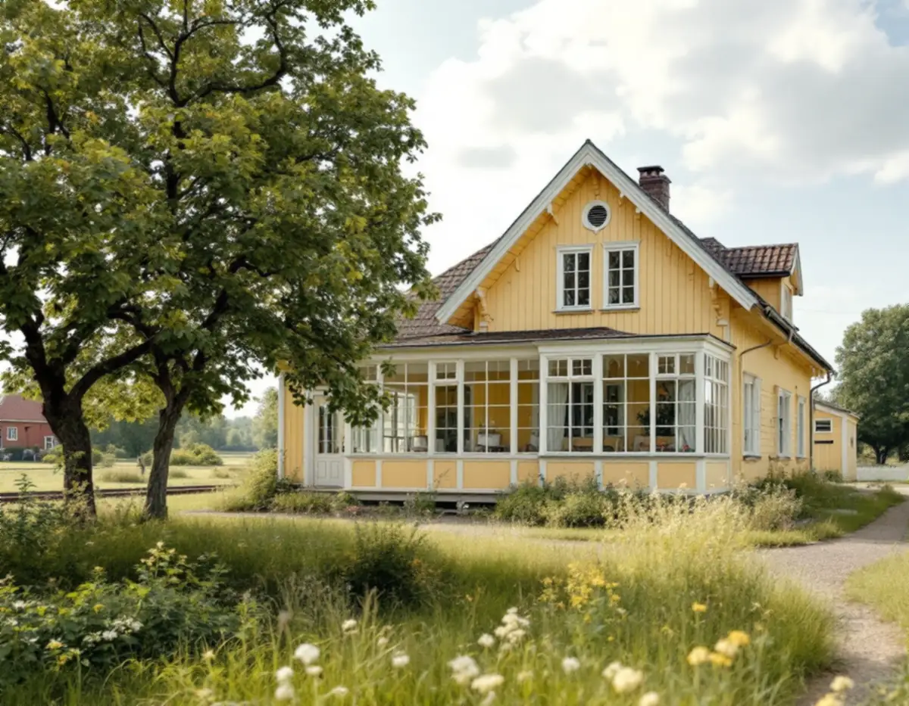
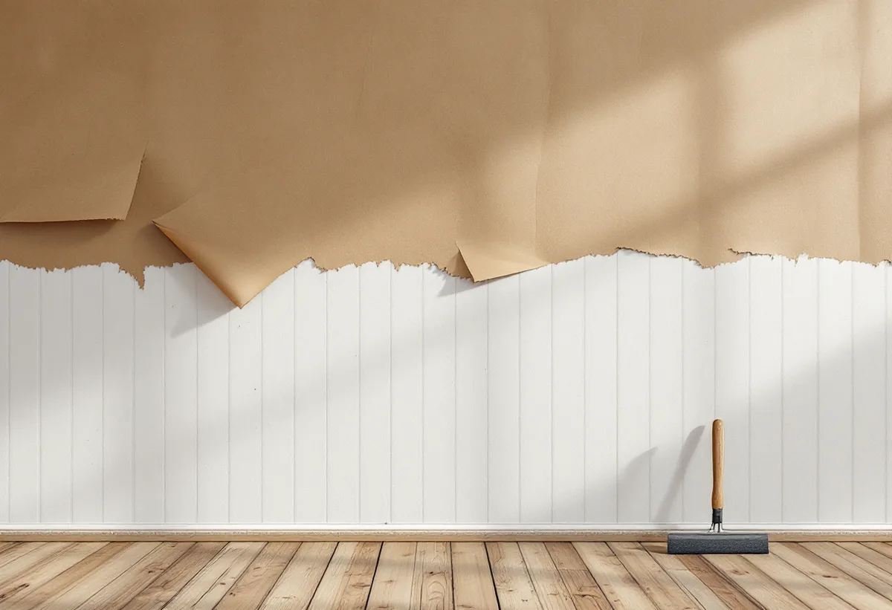
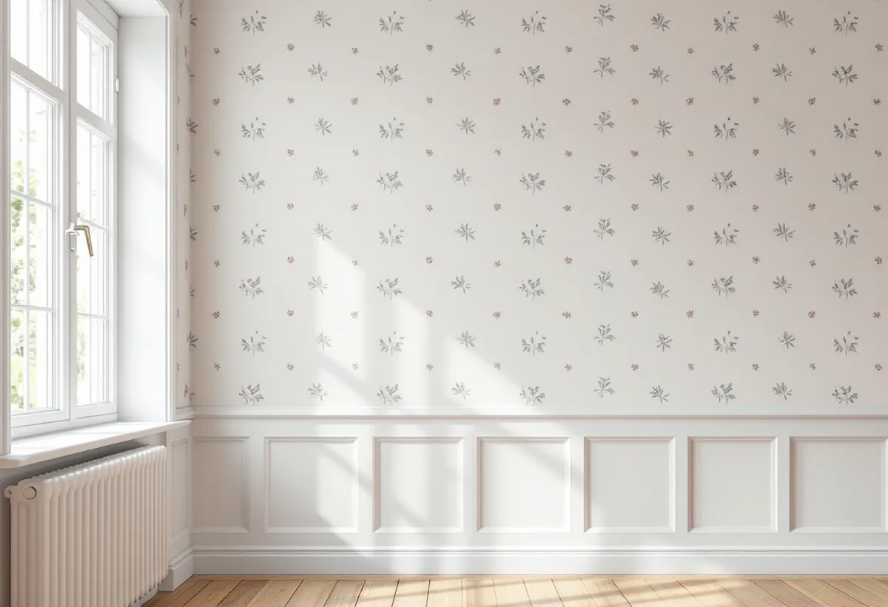

Platsbesök
Vi tittar på underlaget i varje rum och lyfter en hörnbit där det går.
När Roslagsbanan öppnade 1885 växte stationssamhällen med villor fram i Vallentuna, och i många av de äldre husen sitter tapeterna på papp i stället för på skivor. Geal Entreprenad AB tapetserar i villor och radhus i Vallentuna och anpassar underlaget efter väggen som finns.

Vallentunas översiktsplan beskriver hur den nya tiden började 1885 med Roslagsbanans invigning mellan Stockholm och Rimbo. Banan byggdes för att försörja Stockholm med jordbruksprodukter, och kring stationerna växte samhällen med villabebyggelse fram.
I dag är småhusen i majoritet. Enligt översiktsplanen fanns det 2017 drygt 13 000 bostäder i kommunen, och omkring 65 procent av dem var småhus. Spannet är stort, från tidiga stationsvillor till nya hus i tätorterna, och väggarna inomhus ser olika ut beroende på när huset byggdes.

Svenska Byggnadsvårdsföreningen förklarar att makulatur är ett samlingsnamn för restpapper, allt från tidningspapper och enklare förpackningspapper till spännpapp. Spännpapp är ett traditionellt underlag för tapeter som blev vanligt under 1800-talet, och den ger en mer levande yta än gips eller andra moderna skivor.
Pappspänning var ursprungligen ett sätt att få släta väggar och samtidigt täta mot drag, och tidningspapper var en vanlig makulatur eftersom det var billigt. Hittar vi papp och tidningsark längst in under tapetlagren är det alltså inget fel, utan ofta husets ursprungliga lösning.
Förr limmade man ihop spännpappsvåderna med benlim i överlappningen, fuktade väggfältet och spikade upp det. Byggnadsvårdsföreningen avråder från att göra så om man inte har erfarenhet, eftersom det är lätt att det blir fel och inte så snyggt.
Därför börjar vi med att se om den befintliga pappen går att behålla. Sitter den fast och väggen är torr lagar vi revor och lösa partier. Är skivor bakom pappen porösa kan det vara tecken på att väggen varit fuktig i perioder, och då vill vi förstå orsaken innan det tapetseras.
Non-woven är en tapet med plast i materialet. Byggnadsvårdsföreningen skriver att erfarenheterna är delade: vissa anser att det kan bildas mögel bakom tapeten, medan tillverkarna hävdar att ångmotståndet inte är sämre än för papperstapeter. Oberoende forskning saknas.
Föreningen rekommenderar att man klistrar våderna och inte väggen när man tapetserar på papp. I ett äldre hus med spännpapp väljer vi därför oftast papperstapet. I nyare rum med gipsväggar avgör oftast mönster och tålighet valet.
I en äldre villa skiljer sig rummen ofta åt. Ett rum kan ha papp på panel, ett annat skivor från en senare renovering och köket kakel eller målad vägg. Vi går igenom varje rum för sig och skriver in i kostnadsförslaget vilket underlag som gäller var. Då vet du i förväg vilka väggar som behöver mer förarbete och varför, och kan själv välja var en enklare lösning räcker.
Ska fasaden eller fönstren också ses över kan du läsa om det under målare i Vallentuna och fönsterrenovering i Vallentuna.

Vi tittar på underlaget i varje rum och lyfter en hörnbit där det går.
Underarbete, papp och tapetsering står för sig per rum.
Golv, lister och fönster täcks.
Papp lagas eller kompletteras, skivor fästs och skarvar jämnas.
Våderna klistras och sätts upp i lod.
Vi går igenom rummen och lämnar restbitar.
Skatteverket räknar tapetsering inomhus som rotarbete i den bostad du äger och själv använder.
Avdraget är högst 30 procent av arbetskostnaden, högst 50 000 kronor per person och år och högst 75 000 kronor tillsammans med rutavdrag. Tapet, klister och resor ger inget avdrag. Geal drar av beloppet direkt på fakturan.
Hur mycket papp och gamla lager som behöver lagas, antalet rum och tapettypen. En överblick finns under målare. Efter ett gratis platsbesök får du ett skriftligt kostnadsförslag.
Fasad, fönster och invändig målning.
Målare i Stockholm →Takbyte, takbesiktning och plåtarbeten.
Takläggare i Vallentuna →Villaområden och gårdar.
Takrenovering i Vallentuna →Inom eller utanför plan, avlopp och brunn.
Attefallshus i Vallentuna →Nytt våtrum, Roslagsvatten och egen brunn.
Badrumsrenovering i Vallentuna →Ritningar, grannar och kommunens mark.
Byggföretag i Vallentuna →Villor och grupphus från 1970-talet och framåt.
Fasadmålning i Vallentuna →Fritidshus, stationssamhällen och villor i Vallentuna.
Fasadrenovering i Vallentuna →Flygbuller, glasval och lov i Vallentuna.
Fönsterbyte i Vallentuna →Fönster i tegelvillan, fog och bågar.
Fönsterrenovering i Vallentuna →Golv på platta och golvvärme i villan.
Golvläggare i Vallentuna →Slipa och laga gamla golvplank.
Golvslipning i Vallentuna →Utbyggda kök, villor och gårdar.
Köksrenovering i Vallentuna →Rännor, plåttak och uthus i Vallentuna.
Plåtslagare i Vallentuna →Uthus, uterum och fritidshus.
Snickare i Vallentuna →Lovfrågan, skorstenen och arkivet.
Takbyte i Vallentuna →Gårdar, fritidshus och villor i Vallentuna.
Målare i Vallentuna →Ritningar, nivåer och arkivet.
Tillbyggnad i Vallentuna →Radon när huset byggs om.
Totalrenovering i Vallentuna →